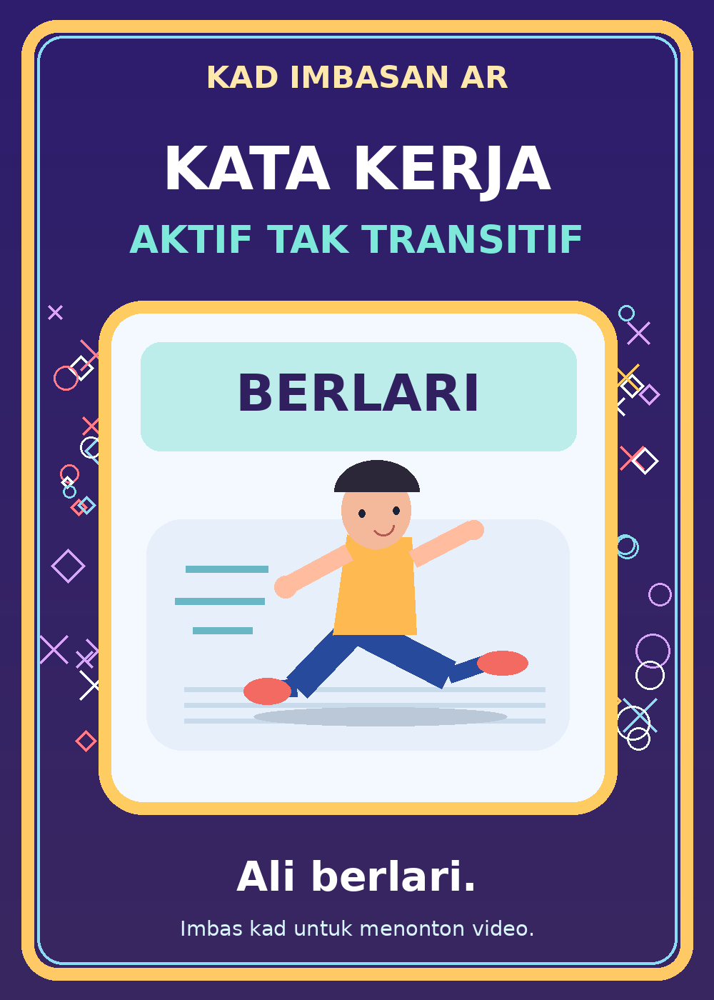

Versi 2.1 · Ada butang tukar padanan jika susunan kad terbalik.
Dua kad. Dua topik.
Satu pengalaman AR.
Imbas Kad 1 atau Kad 2 menggunakan kamera telefon. Setiap kad memaparkan video pembelajaran masing-masing di atas gambar sebenar.
01
Kata Kerja Aktif Transitif
Video Google Flow asal dengan watak cikgu dan murid, berserta audio.
Lihat / cetak Kad 1 ↗02
Kata Kerja Aktif Tak Transitif

Video slaid contoh sementara tanpa suara. Gantikan dengan video Google Flow kedua apabila tersedia.
Lihat / cetak Kad 2 ↗Persediaan sebelum imbas dua kad
- Sediakan targets.mind baharu melalui MindAR Compiler.
- Muat naik kad-1-transitif.png dahulu, diikuti kad-2-tak-transitif.png, dalam sesi kompilasi yang sama.
- Tekan Start → Download, kemudian muat naik targets.mind ke folder utama GitHub, sebaris dengan kelas.html.
- Buka kamera AR dua kad di telefon dan imbas gambar kad yang dicetak atau dipaparkan pada komputer.
- Selepas kad dikesan, tekan ▶ Mainkan Video. Tukar kad untuk menukar kandungan.
Nota: Video kedua ialah demonstrasi sementara. Video hanya dimainkan selepas pengguna menekan butang, supaya audio boleh digunakan pada pelayar telefon. Mod demo lama kekal tersedia tanpa perlu kompilasi kad baharu.